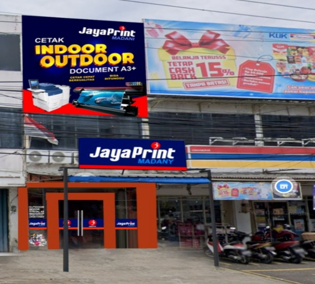

JayaPrint Madany merupakan usaha yang bergerak di bidang jasa percetakan. Usaha ini melayani berbagai kebutuhan cetak, terutama untuk keperluan promosi, informasi, kegiatan masyarakat, maupun kebutuhan pribadi. Digital printing merupakan kegiatan mencetak tulisan, gambar, atau desain dari file digital ke dalam media tertentu menggunakan mesin cetak. Berbeda dengan percetakan konvensional yang biasanya membutuhkan proses pembuatan cetakan terlebih dahulu, digital printing dapat dilakukan secara lebih praktis karena file yang sudah dibuat dapat langsung diproses menggunakan mesin digital. Hal tersebut membuat layanan digital printing banyak digunakan untuk pesanan dalam jumlah kecil maupun besar. JayaPrint Madany merupakan salah satu usaha yang menyediakan layanan percetakan dengan kebutuhan yang cukup beragam. Dari tampilan tempat usaha, terlihat adanya layanan indoor dan outdoor printing. Hal ini menunjukkan bahwa usaha tersebut tidak hanya menangani cetakan yang digunakan di dalam ruangan, tetapi juga media yang ditujukan untuk penggunaan di luar ruangan. Jasa yang ditawarkan dapat digunakan untuk membuat berbagai media seperti banner, spanduk, poster, stiker, kartu nama, undangan, dan kebutuhan promosi lainnya. Kehadiran usaha seperti JayaPrint Madany cukup membantu karena masyarakat dapat memesan produk sesuai ukuran, desain, serta bahan yang dibutuhkan
JayaPrint Madany berada di area pertokoan yang cukup mudah dikenali melalui papan nama usahanya. Bagian depan tempat usaha digunakan sebagai area yang dapat dilihat langsung oleh pelanggan. Pada bagian tersebut terdapat identitas usaha serta contoh informasi mengenai layanan percetakan yang tersedia. Tempat usaha berfungsi sebagai lokasi penerimaan pesanan sekaligus tempat berlangsungnya kegiatan percetakan. Penataan bagian depan juga memiliki fungsi sebagai media untuk memperkenalkan jenis layanan kepada orang yang berada di sekitar lokasi. Kegiatan digital printing membutuhkan beberapa peralatan utama, seperti komputer untuk mengolah desain, mesin cetak digital, serta alat pemotong dan perlengkapan finishing. Komputer digunakan untuk memeriksa dan menyesuaikan file sebelum dicetak. Setelah desain siap, mesin cetak digunakan untukmenghasilkan gambar atau tulisan pada media yang telah dipilihSelain mesin cetak, alat pemotong juga dibutuhkan untuk menyesuaikan ukuran hasil produksi.
Bahan yang digunakan menyesuaikan dengan jenis pesanan. Dalam usaha digital printing, beberapa media yangumum digunakan antara lain kertas, vinyl, bahan banner, dan stiker. Setiap bahan memiliki karakteristik yang berbeda sehingga penggunaannya disesuaikan dengan tujuan produk. Sebagai contoh, bahan banner dapat digunakan untuk media promosi berukuran besar, sedangkan kertas lebih sesuai untuk kartu nama, poster, undangan, atau kebutuhan cetak lainnya. Pemilihan bahan menjadi salah satu hal yang perlu diperhatikan karena berpengaruh terhadap hasil akhir dan ketahanan produk. JayaPrint Madany menyediakan berbagai kebutuhan percetakan. Produk yang dapat dibuat melalui jasa tersebut antara lain banner, spanduk, poster, stiker, kartu nama, undangan, serta media promosi lainnya. Selain ukuran dan bentuk, produk juga dapat dibedakan berdasarkan penggunaannya. Cetakan indoor biasanya digunakan untuk kebutuhan di dalam ruangan, sedangkan cetakan outdoor dibuat untuk ditempatkan di luar ruangan dan membutuhkan media yang lebih sesuai dengan kondisi lingkungan.
Biaya yang harus dikeluarkan pelanggan bergantung pada jenis produk, ukuran, bahan, jumlah pesanan, serta proses tambahan yang diperlukan. Oleh karena itu, setiap produk tidak memiliki harga yang sama. Waktu pengerjaan juga menyesuaikan dengan jenis pekerjaan dan banyaknya pesanan. Produk yang prosesnya sederhana dapat diselesaikan dalam waktu yang lebih singkat, sedangkan pesanan yang membutuhkan ukuran besar atau tahap finishing tambahan membutuhkan waktu lebih lama. Salah satu cara pemasaran yang terlihat dari usaha ini adalah penggunaan papan nama dan tampilan bagian depan toko. Identitas tersebut membuat masyarakat di sekitar lokasi dapat mengetahui bahwa tempat tersebut menyediakan jasa digital printing. Selain pemasaran secara langsung, usaha percetakan pada masa sekarang juga dapat memanfaatkan media digital untuk memperkenalkan produk dan menerima pesanan. Cara tersebut dapat memperluas jangkauan pelanggan karena calon konsumen tidak harus selalu datang langsung untuk mengetahui layanan yang tersedia. Jasa digital printing memiliki target pelanggan yang cukup luas. Pelanggannya dapat berasal dari masyarakat umum, pelajar, mahasiswa, organisasi, pemilik usaha, hingga perkantoran.
Keberadaan JayaPrint Madany memberikan manfaat bagi masyarakat karena menyediakan tempat untuk memenuhi berbagai kebutuhan percetakan. Masyarakat dapat memesan produk sesuai dengan kebutuhan tanpa harus memiliki mesin atau peralatan cetak sendiri. Bagi pelaku usaha, jasa digital printing memiliki peran penting dalam mendukung kegiatan promosi. Banner, spanduk, poster, dan stiker dapat digunakan untuk memperkenalkan produk kepada calon pelanggan. Media promosi yang dibuat dengan baik juga dapat membantu sebuah usaha terlihat lebih menarik dan mudah dikenali. Selain untuk kegiatan usaha, layanan percetakan dapat dimanfaatkan oleh sekolah, organisasi, dan perkantoran. Berbagai kegiatan membutuhkan media cetak untuk menyampaikan informasi maupun mendukung pelaksanaan acara. Dari sisi ekonomi, usaha percetakan juga menjadi salah satu bentuk kegiatan usaha yang menyediakan layanan kepada masyarakat sekaligus membuka peluang pekerjaan bagi orang yang memiliki kemampuan dalam bidang desain, percetakan, maupun penyelesaian produk.
Berdasarkan hasil observasi, JayaPrint Madany merupakan UMKM yang bergerak dalam bidang jasa digital printing dan percetakan. Usaha ini menyediakan berbagai kebutuhan cetak, mulai dari media promosi seperti banner dan spanduk hingga produk lain seperti poster, stiker, kartu nama, dan undangan. Kegiatan di dalam usaha percetakan tidak hanya sebatas mencetak file. Terdapat beberapa tahapan yang perlu dilakukan, mulai dari menerima pesanan, memeriksa desain, menentukan media yang digunakan, melakukan pencetakan, hingga menyelesaikan dan merapikan produk. Setiap tahap memiliki peran agar hasil yang diterima pelanggan sesuai dengan kebutuhannya. Dengan adanya JayaPrint Madany, masyarakat memperoleh kemudahan dalam mendapatkan berbagai produk percetakan. Usaha ini juga dapat mendukung kegiatan promosi pelaku UMKM, memenuhi kebutuhan sekolah dan organisasi, serta menjadi bagian dari kegiatan ekonomi di lingkungan sekitar. Oleh karena itu, jasa digital printing memiliki peranan yang cukup penting dalam memenuhi kebutuhan masyarakat di tengah penggunaan media visual yang semakin luas.